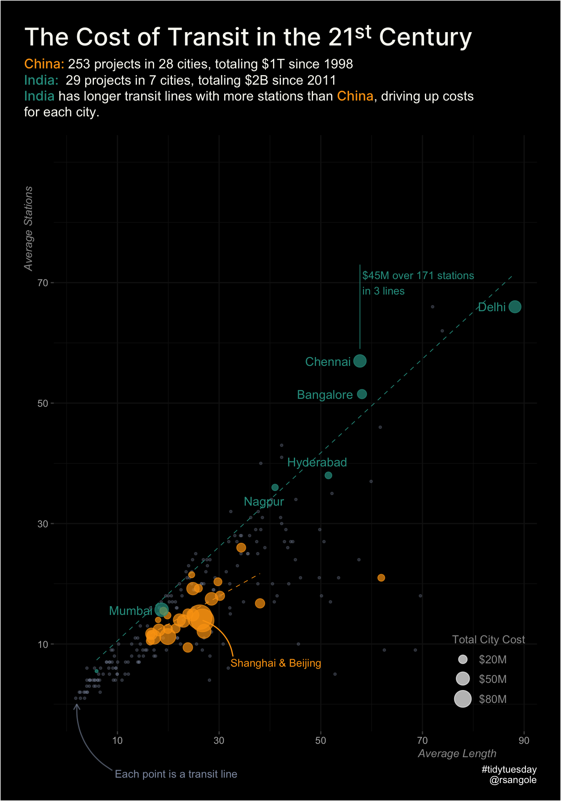

Comparing Indian rail projects to our neighbour China, I find that, on average, Indian lines have a higher number of stations and longer lines than our Chinese counterparts.
— Rahul (@rsangole) January 10, 2021
Also, number of stations to track length is amazingly linear (duh).#TidyTuesday #rstats #dataviz pic.twitter.com/pL4eYBIKNE
TidyTuesday - Transit Costs
TidyTuesday
Visualization
library(tidyverse)
library(ggplot2)
library(ggrepel)
library(ggdark)
library(ggtext)
transit_cost <- data.table::fread("transit_cost.csv")
transit_cost <- transit_cost %>%
mutate(tunnel_per = as.numeric(str_replace(tunnel_per, "%", "")),
real_cost = as.numeric(real_cost),
country = ifelse(is.na(country), "Unk", country),
cc_id = paste(country,city))
dat <- transit_cost %>%
group_by(country, city) %>%
summarise(
total_projects = n(),
total_stations = sum(stations, na.rm = TRUE),
total_tunnel_len = sum(tunnel, na.rm = TRUE),
total_len = sum(length, na.rm = TRUE),
tunnel_pc = total_tunnel_len/total_len,
total_cost = sum(real_cost, na.rm = TRUE) / 1e3, #now in Billions
avg_stations = mean(stations, na.rm = TRUE),
avg_tunnel_len = mean(tunnel, na.rm = TRUE),
avg_len = mean(length, na.rm = TRUE),
tunnel_pc = avg_tunnel_len/avg_len,
avg_cost = mean(real_cost, na.rm = TRUE)
) %>%
filter(total_len < 10000,
total_projects > 1,
country %in% c("CN", "IN")) %>%
mutate(cc_id = paste(country,city),
country = ifelse(country == "CN", "China", "India"))
glimpse(dat)Rows: 35
Columns: 13
Groups: country [2]
$ country <chr> "China", "China", "China", "China", "China", "China",…
$ city <chr> "Beijing", "Changchun", "Changsha", "Chengdu", "Chong…
$ total_projects <int> 27, 7, 13, 11, 11, 7, 3, 10, 5, 11, 10, 8, 2, 5, 12, …
$ total_stations <int> 376, 81, 152, 152, 163, 66, 61, 121, 90, 154, 192, 10…
$ total_tunnel_len <dbl> 450.0686, 95.5000, 164.5400, 225.1000, 156.3370, 151.…
$ total_len <dbl> 721.973, 116.000, 216.860, 252.950, 273.220, 166.940,…
$ tunnel_pc <dbl> 0.7650659, 0.8232759, 0.8219666, 0.8898992, 0.7867776…
$ total_cost <dbl> 138.86373, 16.92127, 38.33016, 44.59756, 41.87035, 25…
$ avg_stations <dbl> 13.925926, 11.571429, 11.692308, 13.818182, 14.818182…
$ avg_tunnel_len <dbl> 20.45766, 13.64286, 13.71167, 20.46364, 19.54213, 21.…
$ avg_len <dbl> 26.73974, 16.57143, 16.68154, 22.99545, 24.83818, 23.…
$ avg_cost <dbl> 5143.101, 2417.324, 2948.474, 4054.324, 3806.395, 364…
$ cc_id <chr> "CN Beijing", "CN Changchun", "CN Changsha", "CN Chen…label_dat_india <- dat %>%
filter(country %in% "India",
city != "Gurgaon")
label_dat_china <- dat %>%
filter(city %in% c("Shanghai", "Beijing"))
to_plot <- transit_cost %>%
tidyr::drop_na() %>%
filter(cc_id %in% dat$cc_id,
country %in% c("CN", "IN"),
length < 100) %>%
mutate(country = ifelse(country == "CN", "China", "India"))in_color <- "#2a9d8f"
cn_color <- "#fca311"
chennai <- dat %>% filter(city == "Chennai")
chennai_stations <- chennai$total_stations
chennai_projects <- chennai$total_projects
chennai_x <- chennai$avg_len
chennai_y <- chennai$avg_stations
chennai_cost <- chennai$total_cost
to_plot %>%
ggplot(aes(length, stations)) +
geom_point(color = "#8d99ae", size = 0.8, show.legend = FALSE, alpha = 0.3) +
geom_smooth(data = dat %>% filter(city!="Wenzhou"),
aes(avg_len, avg_stations, color = country),
se=FALSE, linetype="dashed", size=0.3, method = "lm", span = 4) +
geom_point(data = dat,
aes(avg_len, avg_stations, color = country, size = total_cost^1.3),
pch = 19, alpha = 0.7) +
geom_text_repel(data = label_dat_india,
aes(avg_len, avg_stations,
label = city,
color = country),
min.segment.length = 1,
box.padding = unit(0.5, "line"),
nudge_x = -1,
show.legend = FALSE) +
annotate(geom = "curve",
xend = label_dat_china$avg_len[1], yend = label_dat_china$avg_stations[1],
x = label_dat_china$avg_len[1] + 6, y = label_dat_china$avg_stations[1] - 6,
curvature = .3, arrow = arrow(length = unit(0, "mm")), color = "#fca311") +
annotate(geom = "text",
x = label_dat_china$avg_len[1] + 5.5, y = label_dat_china$avg_stations[1] - 7,
label = "Shanghai & Beijing", hjust = "left", size = 3.4, color = "#fca311") +
annotate(geom = "curve",
xend = 2, yend = 0,
x = 2 + 7, y = 0 - 11,
curvature = -.3, arrow = arrow(length = unit(2, "mm")), color = "#8d99ae", alpha = 0.6) +
annotate(geom = "text",
x = 2 + 7.5, y = 0 - 11.5,
label = "Each point is a transit line", hjust = "left", size = 3.4, color = "#8d99ae") +
annotate(geom = "curve",
xend = chennai_x, yend = chennai_y + 2,
x = chennai_x, y = chennai_y + 16,
curvature = 0, arrow = arrow(length = unit(0, "mm")), color = in_color, alpha = 0.6) +
annotate(geom = "text",
x = chennai_x + 0.5, y = chennai_y + 13,
label = glue::glue(
"{cost} over {stations} stations
in {chennai_projects} lines",
x = scales::label_number(accuracy = 1, suffix = " km")(chennai_x),
y = chennai_y,
stations = chennai_stations,
chennai_projects = chennai_projects,
cost = scales::label_dollar(accuracy = 1, suffix = "M")(chennai_cost)
),
hjust = "left", size = 3.4, color = in_color) +
dark_theme_minimal() +
scale_x_continuous(breaks = seq(10, 90, 20)) +
scale_y_continuous(breaks = seq(10, 70, 20)) +
scale_size(name = "Total City Cost",
breaks = c(20^1.3, 50^1.3, 80^1.3),
labels = c("$20M", "$50M","$80M"),
range = c(1,10)
) +
coord_cartesian(ylim = c(0,90), clip = "off") +
labs(
title = "The Cost of Transit in the 21<sup>st</sup> Century",
subtitle = glue::glue("<span style='color:{cn_color};font-family:Inter-Medium;'>China: </span>253 projects in 28 cities, totaling $1T since 1998<br /><span style='color:{in_color};font-family:Inter-Medium;'>India: </span> 29 projects in 7 cities, totaling $2B since 2011<br /><span style='color:{in_color};font-family:Inter-Medium;'>India</span> has longer transit lines with more stations than <span style='color:{cn_color};font-family:Inter-Medium;'>China</span>, driving up costs <br />for each city."),
x = "Average Length",
y = "Average Stations",
caption = "#tidytuesday\n@rsangole"
) +
theme(
legend.title = element_text(size = 10, color = "gray60"),
legend.text = element_text(size = 10, color = "gray60"),
axis.ticks.x.bottom = element_line(colour = "gray30",size = 0.5),
axis.ticks.y.left = element_line(colour = "gray30"),
axis.title.y = element_text(hjust = .9, size = 10, face = "italic", color = "gray60"),
axis.title.x = element_text(hjust = .9, size = 10, face = "italic", color = "gray60"),
plot.title = element_markdown(family = "Inter-Medium", color = "#f8f8f2", size = 22,
margin = margin(0, 0, 0.5, 0, unit = "line")),
plot.title.position = "plot",
plot.subtitle = element_markdown(color = "#f8f8f2", size = 12, lineheight = 1.2,
margin = margin(0, 0, 1, 0, unit = "line")),
plot.margin = margin(1.5, 1.5, 1, 1.5, unit = "line"),
legend.position = c(0.9,0.1)
) +
scale_discrete_manual(aesthetics = "color",
values = c("India" = in_color, "China" = cn_color),
guide = F)